3.2 快速体验
FreeSWITCH的功能确实非常丰富和强大，在进一步学习之前我们先来一次完整的体验。
FreeSWITCH默认的配置是一个SOHO PBX（家用电话小交换机），那么我们本节的目标就是从零开始安装，实现分机互拨电话，测试各种功能，并通过添加一个SIP-PSTN网关拨打PSTN电话。这样，即使你没有任何使用经验，也应该能顺利学完本章，从而建立一个直观的认识。在体验过程中，你会遇到一点稍复杂的配置，如果不能完全理解，也不用担心，我们在后面会详细介绍。当然，如果你是一个很有经验的FreeSWITCH用户，那么大可跳过本章。
3.2.1 安装基本FreeSWITCH系统
在学习和使用FreeSWITCH之前，我们首先要安装一个基本的FreeSWITCH系统。FreeSWITCH是跨平台的，大多数人使用各种Linux系统；很大一部分的开发者使用Mac平台进行开发；另外，也有很多用户在Windows平台上学习和使用它。因此，我们将分别介绍一下这几大主流平台的安装方法和应该注意的问题。FreeSWITCH的开发非常活跃，因面版本更新很快，所以，我们首先从选择一个安装版本开始。
1.版本简介
到本书截稿时止，FreeSWITCH最新的版本是1.4.beta。
FreeSWITCH的版本号很有规律：版本号有3部分构成，以点隔开。其中，第1位为主版本号，第2位为次版本号，第3位用作补丁及更新的标志。其中，从第2位看，偶数的版本为稳定版，奇数的版本为开发版。开发版更新的内容在经过测试后会合并到稳定版中。如果有大的功能变化或改进，则稳定版和开发版版本两者的编号都会加2。例如，上一个稳定版本为1.2，其对应的开发版为1.3。最初的1.2由1.2-rc1（Release Candidate，候选版）、1.2-rc2、到1.2.0、1.2.1等组成，到本书截稿时为止，最新的一个稳定版本是1.2.22。
FreeSWITCH使用Git进行版本控制。1.2版本单独由一个1.2.stable的分支进行管理。其中，每一个发行版都会对应Git里的一个Tag，如v1.2.10、v1.2.12等。而1.2.stable分支则永远是1.2版中最新的版本（可以看成是稳定分支中的不稳定版）。
FreeSWITCH支持32位及64位的Linux、Mac OS X、BSD、Solaris、Windows等众多平台。某些平台上有编译好的安装包，但作者建议有一定基础的用户从源代码安装，因为这样便于版本的切换与升级。
在实际安装过程中，我们尽量选用比较新的版本。然而，某些版本在某些平台上有一些已知的问题，因此，具体的版本选择我们将在安装时再介绍。
2.在Windows上安装
如果仅仅是为了学习和使用，在Windows平台上可以使用已经编译了的安装包。另外，为了完整性，本章也包含从源代码编译安装的步骤。本节假设读者已经熟悉Windows平台上的软件安装方法，在实际安装过程中仅对应该注意的事项加以说明。
（1）使用安装包安装
Windows用户可以直接下载安装文件，下载地址为http://files.freeswitch.org/windows/installer/。然后根据自己的系统选择不同目录，32位系统的用户选择x86目录，64位系统的用户选择x64目录。freeswitch.msi是最新的安装程序，一般隔几天就会更新一次版本。笔者的测试环境是32位的Windows XP，下载界面如图3-3所示。
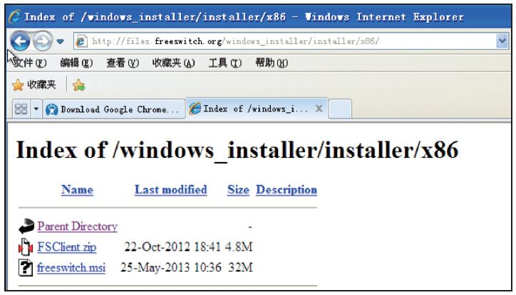
图3-3 下载FreeSWITCH Windows版
如同安装其他程序一样，我们全部选择默认设置即可，也就是说只要连续单击“Next”按钮就能安装完毕。安装完成后选择”开始菜单”→“所有程序”→“FreeSWITCH”→“FreeSWITCH”便可以启动FreeSWITCH了，启动后的界面如图3-4所示。
如果安装过程中你没有修改默认安装路径的话，那么FreeSWITCH的实际安装路径是：c:\Program Files\FreeSWITCH，配置文件在该目录的conf目录下。
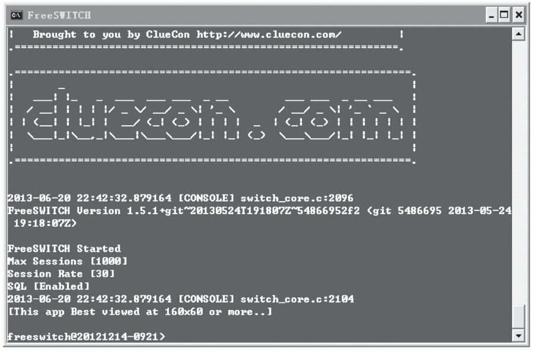
图3-4 Windows上的FreeSWITCH控制台界面
（2）从源代码安装
如果从源代码安装，则首先要下载源代码。在此我们以1.2.10版为例，其下载地址是：http://files.freeswitch.org/freswitch-1.2.10.tar.gz。
除此之外，也可以Git仓库获取源代码。Git是FreeSWITCH使用的版本控制工具，从Git仓库获取源代码的好处是可以随时更新，并可以很方便地切换到不同的代码分支，甚至“倒回”到任意提交点。
如果从Git仓库获取源代码，需要先在Windows上安装Git。使用哪个Git版本不是很重要，笔者用的是从https://code.google.com/p/msysgit/downloads/list?q=full+installer+official+git下载的1.8.3-preview版。
安装Git很简单，一般来说双击安装文件并连续单击“Next”按钮即可安装完毕。不过，在Windows平台编译FreeSWITCH有几个要注意的事情，因此在安装Git的过程中我们也需要注意以下问题，并做适当的选择：
·将FreeSWITCH的源代码放到一个“干净”的目录下。为避免有时候遇到奇怪的问题，最好把代码放到一个比较不容易出问题的目录下，如可以放到C:\src\freeswitch或D:\src\freeswitch下，这两个都是比较好的目录。而像C:\My Documents（有空格）或C:\源代码中文目录\freeswitch（有中文）之类的则在编译或使用时可能会有问题。
·Git相关的环境变量。Git是从UNIX系统上移植过来的一个命令行工具，因此需要一些相关的环境变量。在安装时有三个选项（见图3-5），笔者建议使用第三项，这样最省心。当然，第三项与Windows系统的命令会有少量冲突，如find等。但实际上，你可能永远不会用到Windows上的命令行工具，因此，在安装过程中果断选择第三项可以省去不少麻烦。
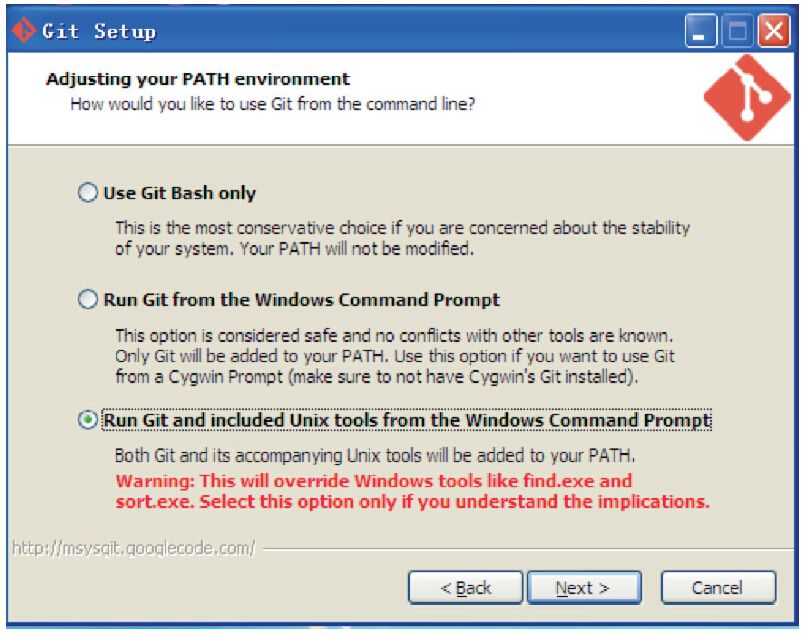
图3-5 安装Git时选择自动包含所有相关的环境变量
·关闭Git的自动换行符转换。众所周知，Widows使用“回车+换行”（“\r\n”，又称作“CRLF”）做换行符，而UNIX仅使用“\n”。Git可以自动在不同的换行符间转换。但问题是，有时候自动转换不靠谱，尤其是对于FreeSWITCH这样大型的项目，所以笔者一般在安装Git时就关掉这一选项（否则在编译阶段可能会出奇怪的错误），如图3-6所示。
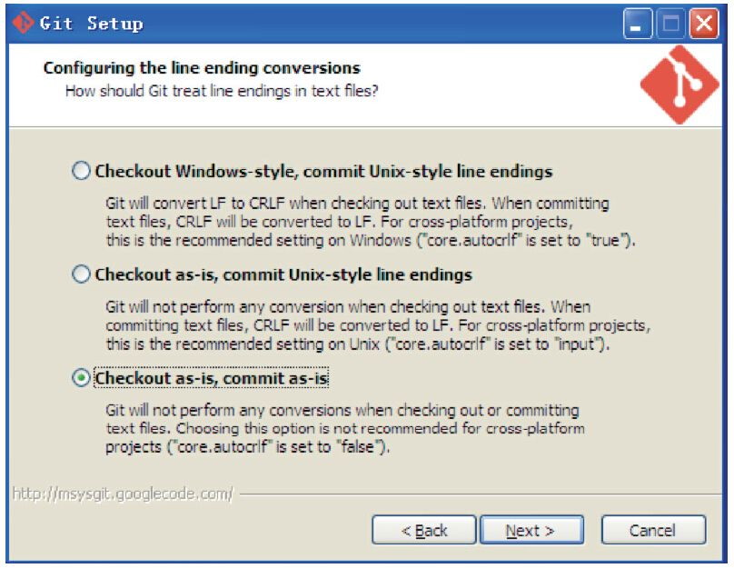
图3-6 不使用自动换行符转换功能
接下来可以连续按“Next”按钮直到安装完毕。Git安装完毕后就可以切换到命令行方式，使用git clone命令把远程的版本仓库复制到本地了：
git clone git@git.freeswitch.org/freeswitch.git
复制完毕后，默认的分支是master分支，即最新的分支。FreeSWITCH对不同版本的安装包在Git仓库中有不同标签与之相对应。使用如下命令可以列出所有的标签（tag，为节省篇幅，省略了一部分输出）：
C:\src\freeswitch> git tag
v1.2.0
v1.2.1
v1.2.10
v1.2.21
v1.2.22
v1.2.9
v1.5.7
可以用以下命令检出对应的标签并建立一个新的本地分支，（我们在这里仍然使用1.2.10版）：
C:\src\freeswitch> git checkout -b v1.2.10
Switched to a new branch 'v1.2.10'
当然，如果你不习惯使用这种命令和工具，则可以下载Tortoise Git图形界面工具，下载地址为https://code.google.com/p/tortoisegit/wiki/Download。
Tortoise Git也允许通过AutoCrlf复选框选择是否开启自动换行符转换，为避免它自动转换，我们应该保证该复选框是非选中状态的，如图3-7所示。
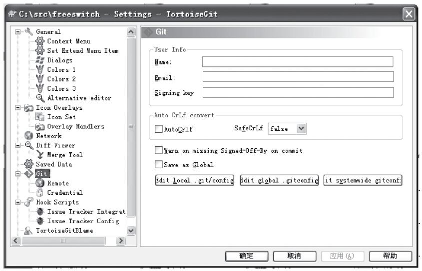
图3-7 Tortoise Git的CRLF设置
使用图形界面的方式对FreeSWITCH的源代码进行复制会比命令行方式直观一些，如图3-8所示。
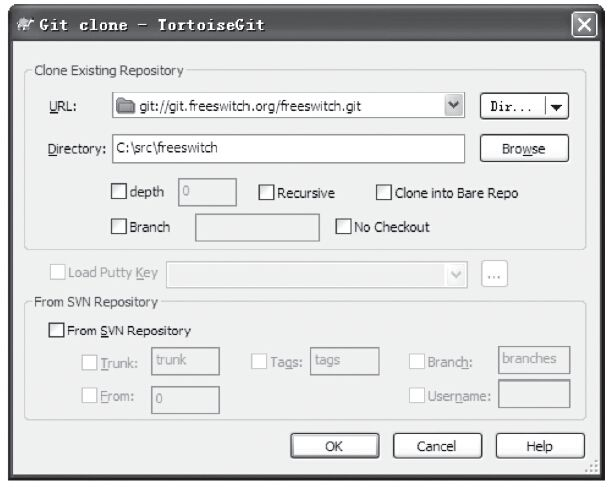
图3-8 使用Tortoise Git复制FreeSWITCH代码库
复制完毕后，可以使用右键菜单，通过选择相应的菜单项检出（checkout）相应的标签或分支，在这里就不多介绍了。
有了FreeSWITCH源代码，接下来还需要下载编译工具。Microsoft提供Visual Studio工具进行开发。FreeSWITCH中有VS2005、VS2008、VS2010以及VS2012的工程文件。VS2008及以前的支持已经不再更新了，因此不推荐使用。VS2010和VS2012目前是官方支持的版本。在此，笔者使用VS2010 Express版为例加以说明。
FreeSWITCH的源代码目录下有一个名为Freeswitch.express.2010.sln的Solution文件，双击鼠标打开它，然后选择菜单项“调试”→“生成解决方案”，或按快捷键F7，就可以进行编译了。不出问题的话，编译成功后将会在源代码目录下的Win32目录下出现Debug或Release目录（取决于编译前的选择，默认为Debug），编译完成的目标文件都会在这些目录下。
图3-9所示是使用VS2010正在编译FreeSWITCH源代码时的界面。
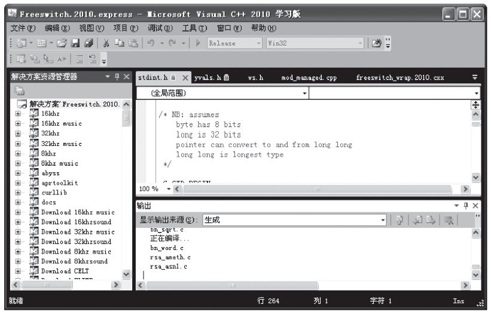
图3-9 在Windows上使用VS2010编译
3.在Linux系统上安装
在开始本小节的讲解之前有一点需要和读者声明一下，就是以下内容是在假定读者已经有了一定的Linux的基本知识并且已经安装了Linux的情况下进行的。若读者没接触过Linux，则建议不采用这种方法，或者去网上搜集相关资料，自行学习Linux相关知识。限于篇幅，本书不再介绍与Linux相关的基础知识。
在安装之前，我们需要先准备安装环境。Linux有多种发行版（发行套件）。一般来说，大部分主流的Linux发行版都是可以运行FreeSWITCH的，但不排除某些发行版的内核、文件系统、编译环境、LibC版本会有一些问题。所以，如果你在安装或使用FreeSWITCH的过程中遇到问题时想获得社区支持，最好选择一种大家都熟悉的发行套件 [1] 。另外，编译安装FreeSWITCH要依赖一些基础的Linux软件包，在不同的发行版平台上可以用以下不同的命令安装：
CentOS：
yum install -y autoconf automake libtool gcc-c++ ncurses-devel make zlib-devel libjpeg-devel
yum install
–y openssl-devel e2fsprogs-devel curl-devel pcre-devel speex-devel sqlite-devel
Ubuntu/Debian：
apt-get -y install build-essential automake autoconf git-core wget libtool
apt-get -y install libncurses5-dev libtiff-dev libjpeg-dev zlib1g-dev libssl-dev libsqlite3-dev
apt-get
–y install libpcre3-dev libspeexdsp-dev libspeex-dev libcurl4-openssl-dev libopus-dev
除此之外，如果你想从Git仓库中下载源代码安装FreeSWITCH，则需要事先安装Git。CentOS 5默认的软件仓库中可能没有Git，如果你需要在CentOS 5上使用Git安装，则可以先安装rpmforge（http://pkgs.repoforge.org/rpmforge-release/），然后再安装Git。CentOS 6的yum源中已经包含了Git，因此不需要rpmforge了。关于如何在你的发行版上安装Git请参考有关资料。一般来说，在Ubuntu或Debian上可以使用如下命令来安装：
apt-get install git-core
在CentOS 6上则可以使用如下命令：
yum install git
在准备好相关Linux环境以后，就可以安装FreeSWITCH了。以下的安装步骤跟选用哪种Linux发生套件关系不大。从以下三种安装方式可任选其一，默认安装位置都是/usr/local/freeswitch。安装过程中会下载源代码目录，请保留，以便以后升级及安装配置其他组件。
（1）从Git仓库安装
从代码库安装能让你永远使用最新的版本，如果安装过程中遇到问题也能够方便地回退到先前的版本。首先我们使用下列命令来从Git仓库中获取FreeSWITCH的源代码：
git clone git://git.freeswitch.org/freeswitch.git
如果需要安装特定的版本，则可以切换到对应的Tag。如安装1.2.22，你可以执行：
cd freeswitch #
进入源代码目录
git checkout
–b v1.2.12 #
根据一个Tag
检出到一个本地分支
或
git checkout
–b v1.4.beta #
从远程分支检出一个本地分支
当然，如果对Git比较熟悉，你也可以直接在复制时指定一个分支：
git clone -b v1.4.beta git://git.freeswitch.org/freeswitch.git
总之，在Linux上得到源代码并检出适当的Tag或分支（新手推荐选择安装时最新的稳定版）后，便可以执行下列命令进行安装（注意下列命令要在FreeSWITCH源代码目录中执行）：
./bootstrap.sh
./configure
make install
上面的命令是在Linux上从源代码安装软件的标准过程。首先第1行执行bootstrap.sh以初始化一些编译环境，第2行配置编译环境，第3执行编译安装。
（2）解压缩源码包安装
注意，这里我们使用本书截稿时最新的1.4.beta6版，如果你安装的时候，应该检查一下是否有更新的版本出现。
使用wget可以获取源代码安装包。下列命令会首先使用wget下载安装包，然后使用tar解压缩，最后使用cd命令进入源代码目录：
wget http://files.freeswitch.org/freeswitch-1.4.0.beta6.tar.bz2
tar xvjf freeswitch-1.4.0.beta6.tar.bz2
cd freeswitch-1.4.0
接下来的配置安装就很简单了，具体如下：
./configure
make install
可以看到，与上一种方法不同的是，它不需要执行bootstrap.sh（源代码在打成tar包前已经执行过了，因而不需要automake和autoconf工具），便可以直接配置安装。
（3）最快安装
这是史上最快的安装方式，如果你对UNIX类的编译系统比较熟，或者跟作者一样需要经常安装系统，你不妨试一试这种方式 [2] ：
wget http://www.freeswitch.org.cn/Makefile && make install
以上命令会使用wget下载一个Makefile，然后使用make执行安装过程。安装过程中它会从Git仓库中获取代码 [3] ，实际上执行的操作跟前面的安装方式相同。
4.在Mac系统上安装
苹果公司的Mac系统是理想的开发者平台，尤其是苹果iPhone和iPad在全世界范围内的成功，使得该平台吸引了大量的开发者。而且大多数的FreeSWITCH开发者也都在使用Mac。事实上，本书就是在Mac系统上使用Sublime Text 2编辑器写成的，本书的大部分环境和截图也是在Mac系统上做的。
如果你想在Mac [4] 系统上安装FreeSWITCH，则需要先下载安装Apple的Xcode工具（https://developer.apple.com/xcode/），并选择菜单Preferences->Downloads安装命令行工具（Command Line Tools） [5] ，如图3-10所示。
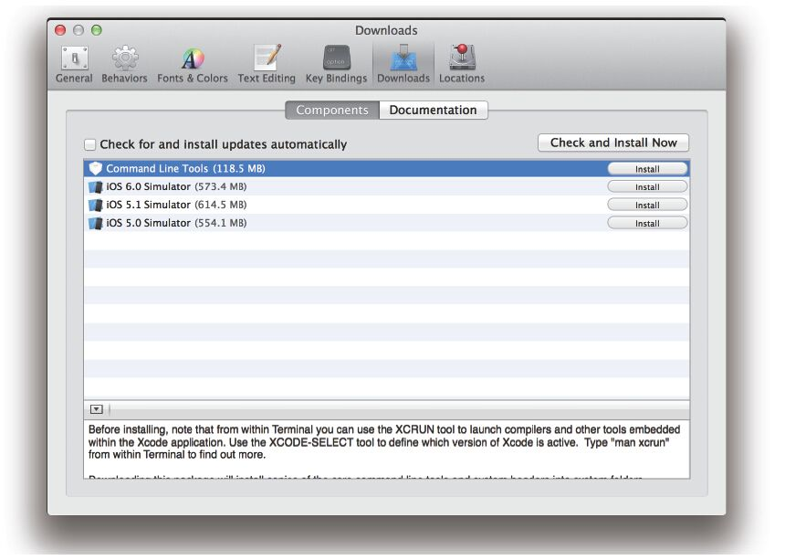
图3-10 安装Apple Xcode及Command Line Tools
除此之外，FreeSWITCH也依赖于一些第三方的库。要安装第三方的库，在Mac平台上一般使用Macports、Flink和Homebrew等包管理工具。Homebrew是比较新的工具，安装和使用起来都很方便。如果你还没有安装，可以用以下命令安装 [6] ：
ruby -e "$
（curl -fsSL https://raw.github.com/mxcl/homebrew/go)"
安装完Homebrew后，可以先试一下安装Git和libtiff库，安装FreeSWITCH时也需要用到它们：
brew install git
brew install libtiff
在你的系统上使用以上命令时，若系统提示你没有权限，则可以在命令前面加上sudo，如安装libtiff库的命令就可写为：
sudo brew install libtiff
其他的安装步骤就全部跟Linux上一样了，如：
git clone git://git.freeswitch.git/freeswitch.git
cd freeswitch
./bootstrap.sh
./configure
make install #
或 sudo make install
（根据是否有权限）
5.安装声音文件
在后面的例子中我们需要一些声音文件。声音文件有两种，一种是提示音，用于通话期间的语音提示，如VoiceMail的提示音，支持TTS功能的提示音等；另一种是音乐，用于在Hold状态时播放，即所谓的Music on Hold（MOH） [7] 。
在Windows系统上，这些声音文件是默认安装的。而在Linux或Mac上安装这些声音文件也异常简单。你只需在源代码目录中执行：
make sounds-install
make moh-install
安装过程中将自动从files.freeswitch.org下载相关的语音包，并解压缩到相关的安装路径中（默认安装在/usr/local/freeswitch/sounds下）。
另外，FreeSWITCH支持8kHz、16kHz、32kHz及48kHz的语音 [8] 。与上面的声音文件相对应的高清声音文件可以选择安装。如以下命令安装16kHz的声音文件：
make cd-sounds-install
make cd-moh-install
6.安装完成后的操作
FreeSWITCH使用make install安装完成后，会显示一个有用的帮助，它会提示你接下来可以用哪些make命令执行一些其他的操作（如我们刚才安装声音文件的命令，在这里就可以看到）。下面笔者在默认的帮助信息后增加了一些中文的注释，读者可以在学习中自行练习一下。
+---------- FreeSWITCH install Complete ----------+
+ FreeSWITCH has been successfully installed. +
+ +
+ Install sounds: +
安装声音文件
+ (uhd-sounds includes hd-sounds, sounds) +
+ (hd-sounds includes sounds) +
+ ------------------------------------ +
+ make cd-sounds-install + CD
音质的声音文件
+ make cd-moh-install +
+ +
+ make uhd-sounds-install +
超高清声音文件
+ make uhd-moh-install +
+ +
+ make hd-sounds-install +
高清声音文件
+ make hd-moh-install +
+ +
+ make sounds-install +
标准声音文件
+ make moh-install +
+ +
+ Install non english sounds: +
安装其他语言的声音文件
+ replace XX with language +
+ (ru : Russian) +
如ru
代表俄语
+ ------------------------------------ +
+ make cd-sounds-XX-install +
+ make uhd-sounds-XX-install +
+ make hd-sounds-XX-install +
+ make sounds-XX-install +
+ +
+ Upgrade to latest: +
升级到最新版本
+ ---------------------------------- +
+ make current +
+ +
+ Rebuild all: +
重新编译
+ ---------------------------------- +
+ make sure +
+ +
+ Install/Re-install default config: +
安装（或重新安装）配置文件
+ ---------------------------------- +
+ make samples +
+ +
+ Additional resources: +
+ ---------------------------------- +
+ http://www.freeswitch.org +
官方网站
+ http://wiki.freeswitch.org +
官方Wiki
+ http://jira.freeswitch.org +
官方的缺陷跟踪工具
+ http://lists.freeswitch.org +
邮件列表
+ +
+ irc.freenode.net / #freeswitch + IRC
聊天室
+-------------------------------------------------+
至此，FreeSWITCH就已经安装完了。在UNIX类操作系统上，其默认的安装位置是/usr/local/freeswitch（下文所述的路径全部相对于该路径）。两个常用的命令是bin/freeswitch和bin/fs_cli（我们下面会讲到它们的用法），为了便于使用，建议将这两个命令做符号链接放到你的搜索路径中，如：
ln -sf /usr/local/freeswitch/bin/freeswitch /usr/bin/
ln -sf /usr/local/freeswitch/bin/fs_cli /usr/bin/
接下来FreeSWITCH就应该可以启动了。通过在终端中执行freeswitch命令(如果你已做符号链接的话，否则要执行/usr/local/freeswitch/bin/freeswitch)可以将FreeSWITCH启动到前台。启动过程中会有许多log输出，第一次启动时会有一些错误和警告，可以不必理会 [9] 。启动完成后会进入系统控制台，并显示类似的提示符“freeswitch@localhost>”(以下简称freeswitch>)。通过在控制台中输入shutdown命令可以关闭FreeSWITCH。
如果您想将FreeSWITCH启动到后台(Daemon，服务模式)，可以使用freeswitch-nc(即No console)。后台模式没有控制台，如果想关闭FreeSWITCH，可以直接在Linux提示符下通过freeswitch-stop命令实现。
不管FreeSWITCH运行在前面还是后台，都可以使用客户端软件fs_cli连接到它并对它进行控制。使用方法为：
/usr/local/freeswwitch/bin/fs_cli
当然，如果上面已经做了符号连接也可以直接运行fs_cli。任何时间想退出fs_cli客户端，都可以输入/exit或按Ctrl+D组合键，也可以直接关掉终端窗口。
3.2.2 连接SIP电话
FreeSWITCH最典型的应用是作为一个服务器（它实际上是一个背靠背的用户代理，即B2BUA），并用电话客户端软件（一般叫软电话）连接到它。虽然FreeSWITCH支持IAX、H323、Skype、Gtalk等众多通信协议，但其最主要的协议还是SIP。支持SIP的软电话有很多，笔者比较常用的是X-Lite和Zoiper。这两款软电话都支持Linux、Mac OS X和Windows平台，免费使用但是不开源。在Linux上你还可以使用Ekiga软电话，它是开源的。
强烈建议在同一局域网上的其他机器上安装软电话，并确保麦克风和耳机可以正常工作。当然，如果你没有多余的机器做这个实验，也可以在同一台机器上安装。只是需要注意，软电话不要占用UDP 5060端口，因为FreeSWITCH默认要使用该端口，这是新手常会遇到的一个问题。你可以通过先启动FreeSWITCH再启动软电话来避免该问题（后者如果在启动时发现5060端口已被占用，一般会尝试选择其他端口），另外有些软电话允许你修改本地监听端口 [10] 。
在UNIX类平台上，通过输入以下命令可以知道FreeSWITCH监听在哪个IP地址上，记住这个IP地址（:5060以前的部分），下面要用到：
netstat -an | grep 5060
udp 0 0 192.168.0.9:5060 0.0.0.0:*
FreeSWITCH默认配置了1000~1019共20个用户，你可以随便选择一个用户进行配置，配置过程如下：
1）在X-Lite上右击，选“Sip Account Settings...”，单击“Add”添加一个账号，填入以下参数（Zoiper可参照配置）：
Display Name: 1000
User name: 1000
Password: 1234
Authorization user name: 1000
Domain:
你的IP
地址，就是刚才你记住的那个
2）其他都使用默认设置，单击“OK”按钮就可以了。然后单击“Close”按钮关闭Sip Account设置窗口。这时X-Lite将自动向FreeSWITCH注册。注册成功后会显示“Ready.Your username is 1000”，另外，左侧的“拨打电话”（Dial）按钮会变成绿色的，如图3-11所示。
值得一提的是，笔者使用的是一个旧版本的X-Lite，之所以这么做，是因为考虑到大家可能对这个版本的X-Lite更熟悉一些。新版本的X-Lite界面如图3-12所示。
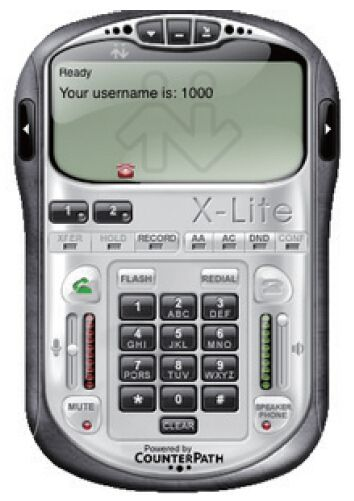
图3-11 XLite软电话注册后
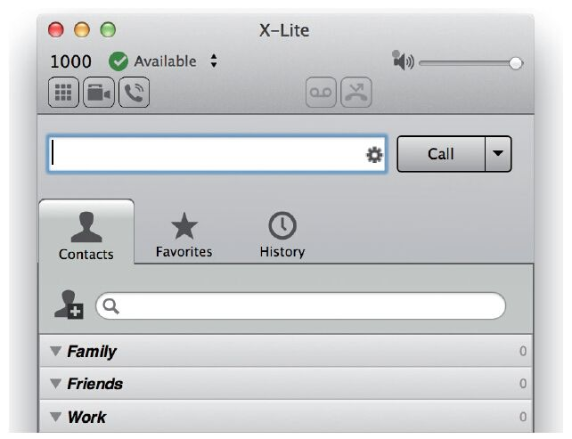
图3-12 XLite软电话（新版）
激动人心的时刻就要来了。输入“9664”按回车（或按绿色拨打电话按钮），就应该能听到保持音乐（MOH）。如果听不到也不要气馁，看一下控制台上有没有提示什么错误。如果有“File Not Found”之类的提示，多半是声音文件没有安装，重新查看make moh-install是否有错误。接下来，可以依次试试拨打表3-1所示的号码。
表3-1 默认号码及说明
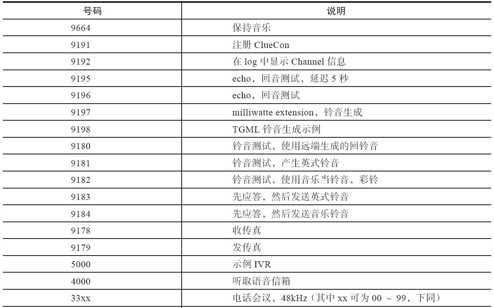
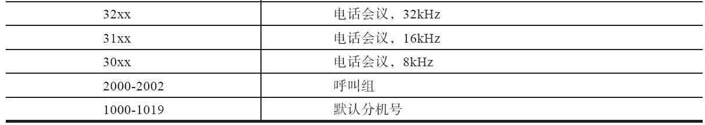
详情见http://wiki.freeswitch.org/wiki/Default_Dialplan_QRF。
另外，也许你想尝试注册另外一个SIP用户并在两者间通话。此时最好是在同一个局域网中的另外一台机器上启动另一个X-Lite，并使用1001注册，注册完毕后就可以在1000上呼叫1001，或在1001上呼叫1000。当然，你仍然可以在同一台机器上做这件事（比方说用Zoiper注册为1001），需要注意的是，由于你机器上只有一个声卡，两者可能会争用声音设备。特别是在Linux上，有些软件会独占声音设备。如果同时也有一个USB接口的耳机，那就可以设置不同的软件使用不同的声音设备。
如果你手边有硬件的IP话机，你也可以试一试。与传统的话机相比，IP话机更加“智能”，功能也更丰富。因为硬件话机的设置方法和软件电话大同小异，所以只要明白上述软电话的设置，即可知道如何设置硬件话机了。我国产的话机质优价廉，在国际上都有很好的口碑。下面我们分别以国产的亿联和潮流的话机为例，熟悉一下硬件话机注册到FreeSWITCH的配置。
亿联（Yealink [11] ）话机是在国内能找到的质量比较好的话机，而且它有好多独有的特性。我们在后面的章节会讲到它的其他特性，这里我们先看看基本的配置。话机本身有一个液晶显示屏，并可以通过按键设置账号信息，但那样配置起来比较烦琐。在液晶屏上找到话机的IP地址以后 [12] ，用浏览器打开，界面如图3-13所示。
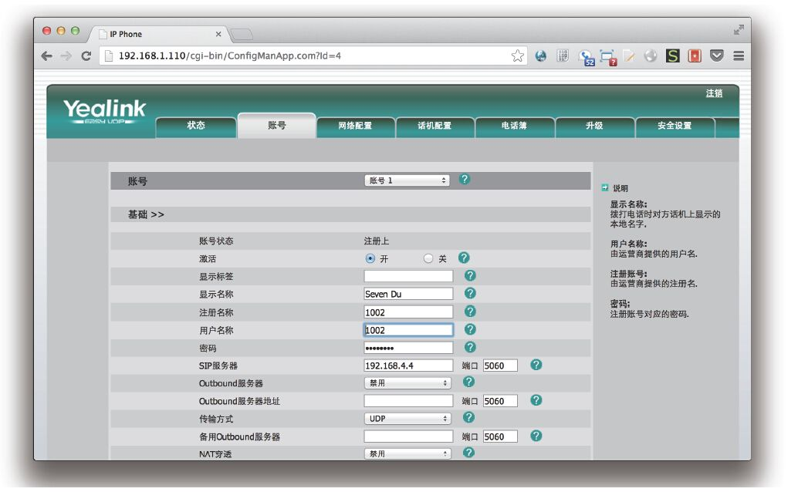
图3-13 亿联话机的账号配置界面
账号配置跟软电话差不多，“显示名称”可以随便填，“注册名称”和“用户名称”这里我们都用1002，“密码”是默认的1234，“SIP服务器”处输入你的IP地址，其他的都保留默认设置，然后单击“提交”按钮。如果一切顺利，就能看到“账号状态”显示为“注册上”，这时就可以拨打1000或1001了。
潮流（Grandstream [13] ）话机也是质量不错的话机，配置和使用也比较方便。它的配置界面如图3-14所示。其中“账号名”可以随便填，“SIP服务器”中输入你的IP地址，“SIP用户ID”、“认证ID”及“名称”都填入1003，“密码”也是默认的1234。保存并提交后即可注册。潮流话机的注册状态是在单独的“状态”页面中显示的。
笔者使用这几款话机注册后相互拨打，彼此都能通，声音质量也很不错。
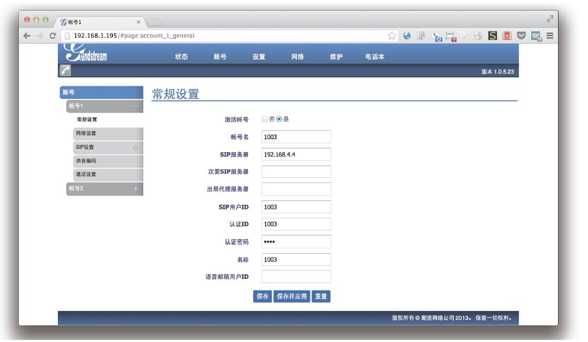
图3-14 潮流话机的账号配置界面
[1] FreeSWITCH开发者使用的平台是Debian 7，社区中也有许多人在使用CentOS（5、6）和Ubuntu。在将要发布的FreeSWITCH1.4版中，官方已决定不再支持Debian6及CentOS5等低版本的Linux系统，但FreeSWITCH1.2版仍支持，总之选择操作系统的原则是，如果你对FreeSWITCH和Linux都不熟悉的话，建议选择最新版本的Debian或CentOS，这样遇到问题可以比较方便地得到帮助（开发者并不使用Ubuntu）。如果你选择一个生辟的或比较小众的发行版，若遇到问题则很难找到能帮助你的人。当然，如果你是往新的系统移植，建议至少熟悉了FreeSWITCH以后再做。
[2] 在本书截稿时，FreeSWITCH 1.4还没有发布正式版，因而你拿到的最新的FreeSWITCH版本在实际安装时可能跟上面描述的安装过程有出入。如果按照上面几种安装方式遇到问题的话，尝试读一下这里提到的Makefile的文件的内容也许会有帮助。
[3] 根据发行版的不同它还可以自动选择使用apt-get（Debian/Ubuntu）、yum（CentOs）或Homebrew（MacOSX）来安装依赖的包和库。对此感兴趣的读者可以自行看一下下载得到的Makefile文件。
[4] 本例是在Mac OS X 10.8.4上做的，Apple公司在2013年10月份发布了Mac OS X 10.9，但笔者尚没有升级。
[5] 本例是在Mac10.84上写的，如果在Mac10.9上，请使用xcode-select-install命令安装。
[6] 由于Homebrew的安装地址可能变化，请到官方网站（http://mxcl.github.io/homebrew/index_zh-cn.html）查看最新的安装方法。
[7] 在实际应用中，如果通话的双方中有一方不想让对方听到自己的讲话，或者在不挂机的情况下拨打另一路电话时，就需要将电话置于Hold（保持）状态，这时候FreeSWITCH需要向对方播放保持音乐，即MOH。另外，在拨打某些呼叫中心客户号码的时候经常遇到“座席繁忙，请等待…”，然后是一连串的音乐，这些音乐也可以称为MOH。
[8] 很少有其他电话系统支持如此多的抽样频率。普通电话是8kHz，某些新的IP话机支持更高的抽样频率，更高频率意味着更好的语音质量（细节听起来更逼真）。
[9] FreeSWITCH在第一次启动时由于没有必要的数据库表，它会打印一些出错信息，并自创建这些表。只要下次启动时不出现错误，就可以暂时不必理会。
[10] 特别注意，如果你是在Linux上，并且在同一台机器上使用Ekiga的话，肯定会遇到这个问题。你需要手工使用gconf_editor来更改Ekiga使用的端口，当然，也可以改FreeSWITCH的端口，如果你会的话。
[11] www.yealink.cn。
[12] 一般使用DHCP启动后会自动获得一个IP地址，否则，也可以设一个静态的IP。
[13] www.grandstream.com.cn。